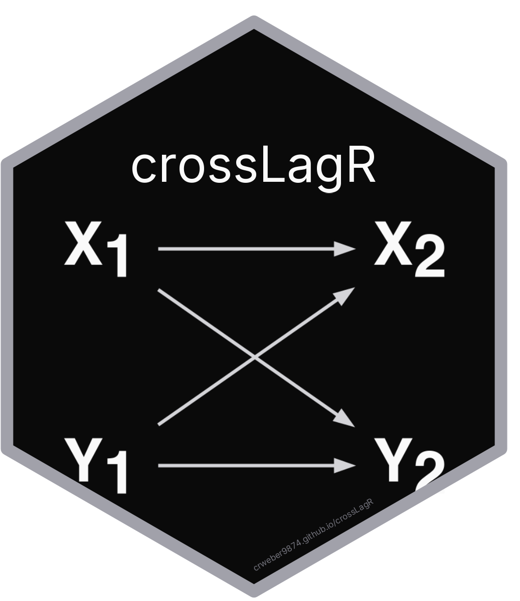

monteCarloRICLPM
monteCarloRICLPM.RdMonte Carlo simulation for Random Intercept Cross-Lagged Panel Model This function combines the estimation and simulation of an RI-CLPM over a fixed number of trials. The output is a data frame that includes the estimated coefficients across these trials
Usage
monteCarloRICLPM(
trials = 10,
waves = 5,
variance_between_x = 0.5,
variance_between_y = 0.5,
stability_q = 0.25,
stability_p = 0.25,
cross_p = 0,
cross_q = 0,
variance_p = 1,
variance_q = 1,
sample_size = 2500,
dgp = "riclpm",
estimator = "riclpm",
confounder_p = 0.3,
confounder_q = 0.3,
confounder_variance = 1,
confounder_stability = 0.4,
include_confounder = TRUE,
confounder_type = "time_variant",
cov_pq = 0.1,
ar_x = -0.15,
ar_y = -0.2,
cl_x = -0.1,
cl_y = -0.1,
change_x = 0.08,
change_y = 0.08,
phi_x = 0.15,
phi_y = 0.15,
initial_var_x = 1,
initial_var_y = 1,
constant_change_var_x = 0.5,
constant_change_var_y = 0.5,
residual_variance_x = 0.5,
residual_variance_y = 0.5,
verbose = FALSE,
...
)Arguments
- trials
The number of trials for the Monte Carlo simulation.
- waves
The number of waves (time points) in the model.
- variance_between_x
Between-person variance for x variable
- variance_between_y
Between-person variance for y variable
- stability_q
Autoregressive effect for q (y) variable
- stability_p
Autoregressive effect for p (x) variable
- cross_p
Cross-lagged effect of y on x
- cross_q
Cross-lagged effect of x on y
- variance_p
Within-person variance for p variable
- variance_q
Within-person variance for q variable
- sample_size
Sample size for simulation
- dgp
Specify the data generation method: "riclpm", "clpm", "clpmu", "lchange"
- estimator
Specify which estimator to use: "riclpm" or "riclpm_nolag"
- confounder_p
Effect of confounder on x variables
- confounder_q
Effect of confounder on y variables
- confounder_variance
Variance of the confounder
- confounder_stability
Autoregressive effect of confounder
- include_confounder
Whether to include confounder in clpmu model
- confounder_type
Character string specifying confounder type for clpmu dgp. Must be one of "time_variant" (default) or "time_invariant".
- cov_pq
Covariance between p and q
- ar_x
Proportional effect for X in lchange dgp
- ar_y
Proportional effect for Y in lchange dgp
- cl_x
Coupling effect in lchange dgp
- cl_y
Coupling effect in lchange dgp
- change_x
Change-to-change effect in lchange dgp
- change_y
Change-to-change effect in lchange dgp
- phi_x
Change autoregression in lchange dgp
- phi_y
Change autoregression in lchange dgp
- initial_var_x
Initial variance for X in lchange dgp
- initial_var_y
Initial variance for Y in lchange dgp
- constant_change_var_x
Constant change variance for X in lchange dgp
- constant_change_var_y
Constant change variance for Y in lchange dgp
- residual_variance_x
Measurement error for X in lchange dgp
- residual_variance_y
Measurement error for Y in lchange dgp
- verbose
Whether to print progress and error messages